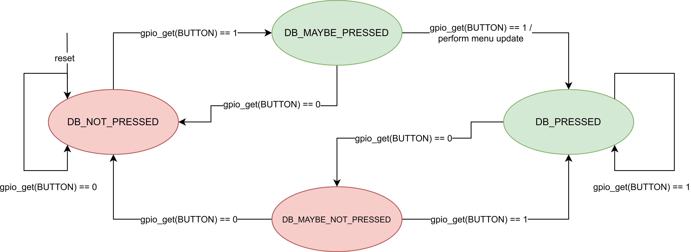
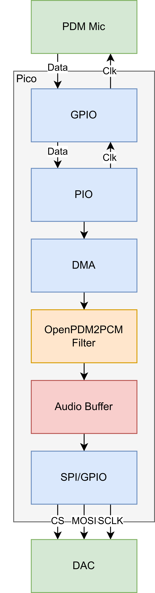

ECE 5730 Spring 2025 Final Project: Smartwatch
Project Introduction
Intro here
High-Level Design
High-level design here
Hardware Design
PCB Design
Our hardware design is centered around our custom PCB built to house all components in as compact of a package as possible. This compactness was our driving design principle as we did not want our watch to be unwieldy on the wrist, and we were aiming to have a similar form factor as an Apple Watch. To do this, we considered the placement of the largest components first: the Pico W and the OLED screen. Specifically, we placed the Pico W lengthwise on the back of the PCB, and the OLED screen on the front. Incidentally, the mounting holes for the OLED screen fit just outside the width of the Pico W, meaning we did not have any issues with their bounding boxes colliding. We also placed these components based on the intended direction the watch was to be worn on the wrist, specifically so that a typical right-handed person who would wear a watch on their left wrist would see the screen in the correct orientation (so that we would not have to do any 180 degree flips in software) and the Pico W's antenna would face outward from their wrist to have the best signal integrity. After placing these largest components, we placed the other smaller components in the voids remaining on the board. For the microphone and speaker, it was critical that they were on opposite sides of the board so as to not cause feedback issues, although this did not end up being an issue as we eventually replaced our tiny speaker with a standard 3.5mm headphone jack as the speaker was not suitable to be driven without an on-board amplifier. As such, the microphone was placed at the top left and the speaker/DAC output at the top right. Next, we placed the 1.8V LDO and LiPo connector on the bottom left of the board, and the 6-pin JST connector for the heart rate daughter board on the bottom right. For the heart rate sensor itself, we made a separate "daughter" board for it as well as the decoupling capacitors since it needs to press tightly against the skin in order to work properly, and this could not be accomplished if put on the main board. We also placed the DAC and IMU on the right side of the board, as well as the three buttons on the left side, with various decoupling capacitors and resistors placed in any spare locations on either side of the board.

Pico W
A Pico W was necessary for this build as we required WiFi for the network connection to obtain the real time and incorporate texting abilities. The nominal 3.2V to 4.2V LiPo voltage is received on the VSYS pin of the Pico which in turn generates a constant 3.3V to be used by peripheral devices. Three buttons were also attached to the Pico: a reset button used for resetting the main loop as well as sending the Pico to bootsel mode on a double press, as well as a select and cycle button used for control of the user interface. Additionally, we use a simple voltage divider to divide down the LiPo voltage to a range that fits within the 3.3V limit of the LDO such that we can use the voltage of the LiPo as a proxy for battery percentage in software.
Low-Dropout Regulator
An LDO (low-dropout regulator) is required to generate the 1.8V supply voltage for the heart rate sensor. We chose the TLV76701DRVR from Texas Instruments since the output voltage can be easily adjusted using a resistive divider. When using LDO's, it is important to ensure the output voltage is sufficiently less than the input voltage, such that it satisfies the "dropout voltage," a parameter that defines the margin needed by the LDO to stabilize the output voltage generated from the input voltage. In this way, LDO's can only step down voltages, but are integrated in a much smaller package than buck converters which serve the same purpose.
OLED Screen
To keep the cost of our device down, we chose a generic 128x64 OLED screen module using the common SSH1106 display driver. The screen is also quite compact with a 1.3" diagonal and thus a high PPI (pixels per inch) count for sharp text. It is also a graphics display as opposed to a character display, meaning any graphic can be easily displayed on the screen by writing to each individual pixel. This device operates at a standard 3.3V and communicates over I2C, making it ideal for this application.
Angle Rate Sensor
We originally wanted to use the MPU6050 integrated IMU used in Lab 3, but found that the individual IC is no longer stocked at DigiKey. As such, we decided to use the I3G4250D angular rate sensor instead, which also has fewer pins than the MPU6050 making it ideal for soldering. While a traditional IMU incorporates both an accelerometer and gyroscope which can provide values for the actual orientation of the sensor in space at any given time, the angular rate sensor only detects changes in angle, meaning all X, Y, and Z values will be 0 in any orientation if the sensor is not rotating. This device operates at a standard 3.3V and communicates over I2C, making it ideal for this application.
DAC and 3.5mm Out
We chose the MCP4822 DAC used from Lab 1 and Lab 2 to make it easier to develop software for it, given we could reuse a lot of our code from those previous labs. This device takes digital SPI signals from the Pico W and converts them into an analog output, suitable for driving some sort of audio output device. We originally intended to hook this up directly to a mini 8-ohm speaker, but found during testing that the DAC expected a high-impedance load such as a dedicated audio amplifier IC which we did not include on our PCB. However, including this amplifier IC would have caused a noticeable increase in PCB size as we would not have had space to fit it on our existing design. Thus, we swapped the speaker for a standard 3.5mm headphone jack so that we could plug our own audio output device into the smartwatch. We envision a compact solution such as wired Apple EarPods as being plugged into the device which have their own audio amplifier and volume controller on-board. This also contributes to the discrete nature of the watch, as a loudspeaker may be too noticeable in typical use cases. This DAC communicates over a standard unidirectional 3-wire SPI interface from controller to peripheral only, making it ideal for small PCB's where routing space is limited.
PDM Microphone
Purely analog microphones are notoriously hard to get clean audio out of without significant DSP code, which would have surely eaten into our resources on the Pico W. Instead, we chose to use a digital microphone implementing the PDM (pulse density modulation) two-wire interface so that the Pico need only deal with digital signals from the microphone. Specifically, we chose the SPH0641LM4H-1 bottom-ported microphone due to its small size and bottom-facing port, meaning debris would not clog the hole had it been an upward-facing design. Such considerations are necessary for smartwatches given they are much more likely to face harsh conditions than, say, a laptop. The port is also ground-shielded around the perimeter, meaning it has good noise-reduction capabilities, again suitable for harsh conditions.
Heart Rate Sensor
A fundamental feature of many modern smartwatches is the ability to measure heart rate. However, not all watches can also measure SPO2, or percent oxygen in the blood. Fortunately for us, Texas Instruments makes an all-in-one heart rate and SPO2 sensor in a compact package suitable for a smartwatch form factor called the MAX30102. This device works by incorporating red and IR LEDs that shine light onto the skin. A certain amount of this light gets absorbed by the blood based on how much volume is pumped through the veins. Photodetectors in the sensor measure the amount of light reflected back, which is inversely proportional to the amount of light absorbed. Using software algorithms, these reflected light readings can be translated into both a beats per minute reading as well as an SPO2 reading. The device requires a 1.8V nominal power supply from the LDO, a 3.3V LED driver power supply, and I2C connections to communicate with the host. All of these nets are run over the 6-pin JST connector that connects the main PCB to the heart rate daughter board.
3D-Printed Case
Given our size constraints for our custom PCB, we needed to design a 3D-printable case that would mount the PCB, the LiPo battery, and the heart rate daughter board together in one compact package while also allowing for cable management and holes for the nylon wrist straps. To do this, we utilized the four mounting holes of the screen as our main connecting structure for the entire "sandwich," running M2.5x20 screws through them and mounted to the underlying case through 3D-printed cylinders. The LiPo battery sits directly below the Pico W and was chosen to have a width less than the distance between the mounting cylinders. We also needed to make sure the Pico W USB port was easily accessible so we could program it. The heart rate sensor daughter board is mounted directly behind the battery using some M2.5x8 screws to secure it to the surface, whose depth was chosen so that the surface of the heart rate sensor would sit flush against the wrist. There is also ample room under the PCB for routing the LiPo and heart rate sensor cables so that they do not get in the way of normal operation. Rectangular slits are also lengthwise on the bottom surface where 1" wide nylon straps were mounted so that the watch could be worn on the wrist. A simple nylon clip design was also made to secure the strap in place when worn.


Total Cost
Project specifications required our total unit cost to be under $125. We selected our parts using this as a guiding constraint. Even accounting for $15 worth of price slack for passive components, connectors, straps, hardware, etc., we are still well under the $125 budget constraint at just around $64 per smartwatch excluding shipping/customs for the custom PCBs.
| Part | Qty/Board | Unit Price ($) | Total Price ($) |
|---|---|---|---|
| Main PCB | 1 | 0.86 | 0.86 |
| Daughter PCB | 1 | 0.41 | 0.41 |
| Pi Pico W | 1 | 10.99 | 10.99 |
| OLED | 1 | 3.60 | 3.60 |
| 3.7V LiPo | 1 | 3.00 | 3.00 |
| Microphone | 1 | 1.06 | 1.06 |
| 3.5mm Jack | 1 | 1.02 | 1.02 |
| Heart Rate Sensor | 1 | 12.04 | 12.04 |
| Angular Rate Sensor | 1 | 8.89 | 8.89 |
| DAC | 1 | 3.97 | 3.97 |
| LDO | 1 | 0.32 | 0.32 |
| Buttons | 3 | 0.98 | 2.94 |
| Misc Passives | 1 | ~5.00 | 5.00 |
| Misc Connectors | 1 | ~5.00 | 5.00 |
| Misc Hardware | 1 | ~5.00 | 5.00 |
| Total | 64.10 | ||
Software Design
Our repository is located here.
Directory Structure
We structure our directory to have a main .c file for our primary software loop, with a corresponding .h and .c file for each peripheral we use on our board. For instance, we have a .h/.c pair for our OLED screen, our heart rate sensor, and our angle rate sensor. Such structure allows for clear hierarchy and abstraction in our code to make it more readable and extensible for future iterations. To simplify includes, we also have a common.h file that every .h file includes that has common libraries such as stdio, math, string, and common definitions that are needed by nearly every .c dependency. For our custom screen images, we have a dat/ subdirectory that contains an array of (x,y) coordinates for each image we draw on the screen as generated by our image_convert.py Python script.
Initialization
During initialization, we include a power-on-reset delay of 10 ms to allow all voltages to stabilize and all peripherals to properly start up. We then initialize our I2C and SPI busses, as well as initialize the GPIOs for the select and cycle buttons to be inputs with internal pull-downs enabled. We also initialize the ADC for the LiPo voltage reading, as well as call the initialization functions for the OLED screen, the angle rate sensor, the PDM microphone, and the heart rate sensor. Such initialization functions write configuration registers within each device to set it up to take the measurements we desire in our software. Next, we connect to WiFi using the wifi_udp_init() function to obtain a MAC and IP address for the Pico, as well as start the UDP threads for sending and receiving data via UDP packets. In this function, we connect to a beacon, in our case a WiFi hotspot, and receive our IP address back when connected. The status of this connection is shown on the OLED screen, and will time out after 10 seconds if a connection to the pre-programmed SSID in the wifi_udp.c file cannot be obtained. If successful, we are able to instantly poll using network time protocol to receive the real time in EST. A message indicating a connection's success or failure is written to the screen as a result. Next, the core 1 thread is launched which handles the main menu checking and other basic functionalities. Then, the main thread continues to its own loop on core 0 which grabs the latest text message from UDP and fills the character buffer. The UDP operations are performed on a separate core since they are quite resource-intensive and we found that using only a single core caused interference with the SPI interface to the DAC for reasons unknown.
Button Debouncing
For both the cycle and select buttons, we use an identical FSM as in our previous labs, where we only detect a true button press upon two loop iterations of detecting a pressed state, with the same for a button release. Such a mechanism prevents us from detecting multiple false button presses as the mechanical switch opens or closes. The cycle button's main function is to switch between apps in the main menu, as well as return to the main menu when in an app. The select button is used to select a specific app or perform a function within an app such as starting and stopping the stopwatch or resetting the step count. The debounce FSM's are checked once per loop iteration by calling the update_menu() function.
| Variable | Description |
|---|---|
| main_menu_state | Enumerated type representing the current app selected |
| in_sub_menu | 1 if the menu FSM is currently entered into an app, 0 otherwise |
| sel_pressed | Current GPIO state of the SEL button |
| sel_button_state | Debounce FSM state for the SEL button |
| cyc_pressed | Current GPIO state of the CYC button |
| cyc_button_state | Debounce FSM state for the CYC button |
Menu Checking Loop

Screen Orientation Check
Upon each loop iteration, we check the current status of the angle rate sensor to see if the screen needs to be turned on or off in the check_screen() function. To do this, the check_screen() function obtains the current value of the x-dimension angle rate, which we have experimentally determined to be the dimension in which a wrist rotation occurs when looking at the watch. If this value is greater than 2.0g, we return a 1, indicating that the screen should turn on as this corresponds to a rotation of the wrist upward. Conversely, if the value is less than -2.0g, we return a -1 to indicate the screen should be turned off as this corresponds to a rotation of the wrist downward. In any other case, we return a 0, indicating no action should be taken. This return value is then checked in the main loop. If a 1 is returned, we set screen_status to 1 to indicate it should be on, else if a -1 was returned, we set screen_status to 0 to indicate the screen should be turned off. If screen_status is a 1, then we display the current state of the menu, else we clear the screen so that it displays nothing. In this way, we get the same functionality as off-the-shelf smartwatches that turn off the screen when the user's wrist is down.
int check_screen() {
float x = get_x_rateDPS();
if (x > 2.0) return 1;
if (x < -2.0) return -1;
return 0;
}
screen_rot = check_screen();
if (screen_rot == 1) screen_status = 1;
if (screen_rot == -1) screen_status = 0;
if (screen_status) ... // do menu loop
else ... // display black screen
| Variable | Description |
|---|---|
| screen_rot | Return variable from check_screen(), 1 = turn screen on, -1 = turn screen off, 0 = no action |
| screen_status | Current power status of the screen, 1 = screen is on, 0 = screen is off |
Real-Time NTP Update
Any smartwatch should be able to display the real time as pulled from the network. Since we are using the Pico W, we accomplish this by pulling the time via NTP upon a POR of the watch, and subsequently update the time based on the internal timer after this so as to not have to poll the network every second. We keep a variable, ntp_time_initialized, which determines whether or not the time has been initialized from the network yet. If it has not, we call get_current_ntp_time() to obtain this time. If the time has already been initialized, we simply check if the previous update time subtracted from the current time is one second. If it has been, we update the seconds, minutes, and hours variables accordingly. In the event that the Pico W did not connect to the network upon initialization, we simply use the uptime from power-on as the time displayed. These updates happen every loop iteration so that the time displayed is always accurate. If the main_menu_state is currently on the MM_TIME setting, we display this real time on the screen, alongside the date as pulled from NTP, the battery percentage as read from the ADC, as well as an icon indicating the connection status to the network. The battery percentage is calculated using a custom map_batt() function which takes in the minimum and maximum ADC values that correspond to the minimum and maximum battery voltages of 3.2V and 4.2V, respectively, divided in half as per the voltage divider on the PCB, as well as the minimum and maximum battery percentages which are, of course, 0% and 100%. A simple calculation using equivalent fractions is performed to convert the raw ADC value into a battery percentage.
| Variable | Description |
|---|---|
| ntp_time_initd | 1 if the NTP time has been initialized using get_current_ntp_time(), 0 otherwise |
| rt_ |
Holds the value of the real time hours, minutes, or seconds |
| prev_rt_secs | Holds the previous value of rt_secs - when rt_secs is different than this, the screen is updated |
| ntp_time_ready | Indicates if the UDP module is ready to grab the NTP time |
| rt_last_update | The time uptime at which the last real time update occurred, used to check if the displayed string should be updated which happens every second |
| rt_uptime_ms | Used to keep track of uptime in the event there was an unsuccessful WiFi connection |
Texting
The ability to communicate between devices through texting in our case is handled by UDP communication. When our watch connects with the beacon and gathers an established IP address, we also initialize a port for UDP communication to send and receive messages. By using the “netcat” command on a computer, we can communicate with a hardware device's specific IP and port if connected to the same SSID. The watch has an IP address along with which it is constantly polling on port 1234 for UDP messages. On our computer, we can connect to the port and IP of the watch and send messages to it. The watch interface will then receive the latest message using the get_latest_udp_message() function. If the latest message is different from the previous message, then we iterate through each character and put a newline every 16 characters so that the message will break onto the next line of the screen.
| Variable | Description |
|---|---|
| msg | Holds the latest UDP message as a character array |
| filtered_message | Holds the latest UDP message as a character array with newlines and EOF's inserted for proper displaying on the screen |
Heart Rate and SPO2 Monitoring
The code for the MAX30102 is heavily adapted from Sparkfun's demo code. When the heart rate screen is selected from the main menu, the max30102_hr_check_for_beat() function is called once per loop iteration using the latest value of the IR photodetector obtained via the max30102_get_ir() function. Within this function, a variety of variables are recorded to keep track of whether the measured IR signal over time encounters a rising edge as it passes from a negative to a positive value, with such an event indicating a heartbeat has just occurred. When this happens, the function returns true, else it returns false. Back in the main loop, if the function has returned true, the difference in time from the last time a heartbeat was detected is taken and used to directly calculate the latest beats per minute (BPM). Since this value can fluctuate quite easily, the BPM values, when obtained, are stored in a ring buffer and averaged out to the final BPM value displayed to the screen, hr_bpm_avg.
If the cycle button is pressed, the sensor toggles to SPO2 mode, where the percentage of oxygen in the blood is displayed. Since these values are also quite volatile, a buffer of 100 entries is used to store the latest red and IR photodetector values. Upon every loop iteration, the last 75 values are shifted to the front of the buffer, and 25 new values are read into the buffer by first waiting until a new sample is ready on both the red and IR photodetectors using the max30102_avail() function and then retrieving these values using the max30102_get_red() and max30102_get_ir() functions. Once the 25 new samples have been obtained, both buffers are passed to the max30102_read_spo2() function to calculate the next SPO2 value. To do this, this function first subtracts the DC mean from the signal formed by the values in each buffer, taking a moving average of the signal, and finding the two minimum values. The maximum between these two minimum values is then taken and used to do a lookup in a table of precomputed percentages to output the current SPO2 percentage to be displayed on the screen.
| Variable | Description |
|---|---|
| hr_screen | 1 if the app selection is on BPM, 0 if it is on SPO2 |
| hr_sense | A structure containing a buffer for red and IR photodetector values, as well as a head and tail pointer for the buffers |
| hr_signal | A structure holding parameters for the IR signal over time, including AC max and min, value of the positive and negative edge, etc. |
| fir_coeffs | A constant array holding pre-defined coefficients for the FIR filter used for measuring BPM |
| hr_last_beat | The time at which the last heart beat occurred |
| hr_bpm_delta | The difference in time between the current heart beat and the previous heart beat |
| hr_bpm | The instantaneous bpm as calculated with hr_bpm_delta |
| hr_rates | Array holding the last HR_RATE_SZ BPM values |
| hr_rate_spot | The index of the next entry in hr_rates |
| hr_bpm_avg | The average of the BPM's stored in hr_rates, this is the BPM value displayed to the screen |
| spo2_ir_buff | Buffer holding the last SPO2_BUFF_LEN IR photodetector values |
| spo2_red_buff | Buffer holding the last SPO2_BUFF_LEN red photodetector values |
| spo2_rdg | The current SPO2 value |
| prev_spo2 | The previous SPO2 value, written to the screen if the new value is not valid |
| spo2_valid | Indicates if the current SPO2 value in spo2_rdg is a valid reading |
Activity Tracking
To detect a step using the angle rate sensor, we call the update_step() function once per loop iteration to check the current angular rate of change in the z-dimension, which is the dimension that has been experimentally determined to be in the direction of the swing of an arm during regular walking. Specifically, we check to see if this value is greater than 1.2g, an experimentally-determined threshold. If this condition is true and the previous measured value was less than 1.2g, then we increment a pointer to the step_count variable. In terms of bodily movements, this corresponds to when the hand is at the bottom position of the swing and is moving forward, which, with normal walking, occurs once per step. The current step count is displayed on the screen when that app is selected, and it can be reset if the select button is pressed when in the app. Otherwise, the step count since power-on will be stored indefinitely.
| Variable | Description |
|---|---|
| step_count | The current number of recorded steps |
| prev_z | The last z-dimension reading from the angle rate sensor |
Stopwatch
The stopwatch code is similar to the real time code in that a series of conditionals are used to check if the seconds, minutes, or hours displayed should be updated, as well as using the difference in current absolute time to the last updated time to detect when an update should occur. However, the stopwatch increments in 100s of milliseconds as opposed to one second as with the real time. As such, we need an extra variable sw_decisecs to hold this value. Upon entering the stopwatch app, the stopwatch is not running. Only upon pressing the select button will it start to run. Pressing the select button again will stop the stopwatch and keep the time displayed on the screen. Pressing the select button another time will resume it. By pressing the cycle button to exit the stopwatch app, the stopwatch values will reset to 0.
| Variable | Description |
|---|---|
| sw_en | 1 if the stopwatch is currently running, 0 otherwise |
| sw_decisecs | The current number of deciseconds (100 milliseconds) |
| sw_ |
The current seconds, minutes, or hours of the stopwatch |
| sw_last_update | The time uptime at which the last stopwatch time update occurred, used to check if the displayed string should be updated which happens every 100 milliseconds |
Audio Recording
Audio recording is accomplished using a serialized order of steps that first records the audio sample using the Pico PDM library adapted from hackster.io, storing each sample in a buffer, and then playing back each sample in the buffer by sending the data to the DAC using appropriate timing between messages. This sequence of steps will only be executed if the audio_done_rec variable is false, indicating we have not completed a recording yet. Once the recording and subsequent playback is complete, the variable will be set to true so that the record-and-playback loop does not repeat without user intervention. If the user then presses the select button after playback is done, the loop will reset, allowing the user to record new audio and play it back. The PDM library works by using a PIO block to generate a 1.024 MHz clock on the PDM clock line that goes to the microphone. Upon receiving this clock signal, the microphone will send back digitally-encoded audio data, with the width of each pulse corresponding to the analog value of the audio the microphone has recorded. The PIO block will also capture a single digital value on the PDM data line every clock cycle. The DMA controller will then capture audio at 8000 samples per second, meaning each millisecond of data will contain 8 samples. An interrupt handler which occurs every millisecond will capture these 8 samples into a 2D audio buffer which stores 8 samples at each index. When the interrupt handler is called, the outer index is incremented so that the next millisecond of audio will be stored in the subsequent entry. Given the RAM limitations of the Pico W, we have found that we are able to have an outer length value for this 2D array of 5000, which corresponds to five seconds of audio since each 8-sample subarray is 1 ms worth of audio. Additionally, each raw PDM data sample is 1024 bits wide, so an intermediate filter, OpenPDM2PCM, is used to convert this into 16-bit samples to be stored in each subarray. The provided code uses a 16 KHz sample rate, but we chose to use 8 KHz to save on memory. We have found minimal audio degradation from halving the sample rate. When starting the audio recording phase, we call the pdm_microphone_start() function to enable the interrupt handler which fills the array. When the array is full, which is determined upon checking the current subarray index, the microphone is stopped using the pdm_microphone_stop() function to disable the interrupt handler from updating the audio buffer. Finally, the audio samples can be written to the DAC by simply iterating through each entry of each subarray one at a time, downconverting the 16-bit samples into 12-bit values suitable for our 12-bit DAC, and writing the value to the DAC over SPI. The amount of time to wait between sending each sample is determined by the DAC_DELAY parameter, which is simply the inverse of the audio sample rate, 8 KHz. By setting the delay to this value, we ensure the playback of the audio sample matches the rate at which it was recorded, meaning it will sound correct. This application was definitely the hardest to write as we needed to get the timing correct to ensure the audio was played back correctly. We also encountered the additional problem of the WiFi connection interfering with the SPI transactions to the DAC as discussed in further detail in our Challenges section.
| Variable | Description |
|---|---|
| audio_done_rec | 1 if a record-playback sequence has been completed, 0 otherwise |
| audio_samp_idx_outer | Current index of the 8-entry subarray of the audio sample buffer, between 0 and 5000 inclusive |
| audio_samp_idx_inner | Current index within a given 8-entry subarray of the audio sample buffer, between 0 and 8 inclusive |
| dac_value | The 12-bit digital audio sample to send to the DAC, it has been downconverted from the original 16-bit sample |
| dac_msg | The dac_value combined with DAC_CFG_A which sets the appropriate DAC channel, gain, and other parameters |
Info Scren
A simple info screen is also available which displays the IP address, MAC address, and UDP port of the smartwatch given it is connected to the network. This screen is essential for configuring a computer to be able to send messages to the watch via our texting app.
Custom Images
Each app is represented by a small image when cycling through the main menu. We generate this image using our image_convert.py program that takes in a png image as input, resizes it to a specified number of pixels in the x- and y-directions, and extracts the pixels that are not empty by checking if the alpha parameter is not equal to 0. The x and y dimensions of these extracted pixels are written out to a C-style array such that the array contains the (x,y) coordinates of pixels to draw to the screen. Since the screen is monochrome, we need only specify the (x,y) coordinates and not the color. When displaying these images via the generated C-arrays stored in the dat/ subdirectory, for loops can be used to iterate over each pair of (x,y) coordinates and draw them to the screen.
Design Challenges
As previously mentioned, one challenge we ran into was not being able to drive the 8-ohm speaker to a sufficient enough volume using the MCP4822 DAC. To solve this, we simply replaced the speaker with a 3.5mm headphone jack so that any audio output device with a built-in amplifier could be used. This ended up working to our benefit, however, since including an amplifier on the PCB would have increased the size, and the speaker's volume would have reduced the discreteness of the smartwatch we were aiming to achieve.
We also intended to use the advertised temperature sensor in the IMU to report real-time temperature in the user interface. Upon testing, however, we discovered that the temperature sensor was not very accurate, and further research on online forums revealed its purpose was primarily to account for sensor drift, thus the relative differences in values read from it were intended by the manufacturer to be used, not the raw values.
Another issue we had was related to interference between the WiFi and SPI modules on the board. We found that using the texting feature and then switching to the audio recording was causing the loop to freeze on playback of the audio. Upon debugging, we found that the spi_write16_blocking() function would work properly for a few transactions, but freeze up about 100 transactions in. By temporarily disabling different peripherals, we identified the issue as being related to the WiFi infrastructure. To fix this, we put all WiFi-related functionality on core 0, and moved all other operations to core 1. By doing this, we no longer had interference between WiFi and SPI, and the audio recording worked correctly.
When using the PDM microphone for the first time, we found that the code would also freeze when calling the pdm_microphone_stop() function. By narrowing down the problem area to the dma_channel_abort() function call in the pdm_microphone_stop() function, we found that calling disable_interrupts() before aborting the DMA, and then calling enable_interrupts() to re-enable them after aborting the DMA fixed the issue.
Results of Design
The accuracy of our data is something our group took pride in. Our real time clock accuracy was checked by comparing against the time on any WiFi-connected device. After leaving the watch on for hours, we confirmed that the times still matched. A similar methodology was used for our stopwatch, for which we compared it against the stopwatch app on an iPhone. For our heart-rate sensor, we compared the reading against those provided by an Apple Watch, and found the measurements to be within 10 BPM, which is quite accurate given the complexity of the algorithm. While we did not have access to a dedicated pulse oximeter, all three of us knew our appropriate percentages were above 98%, and our SPO2 readings always showed at or above this value for all of us. Step tracking was verified by walking a predetermined number of steps that we counted manually and ensuring the reading on the watch matched it.
Additionally, ensuring safety with our watch was paramount for our design. Our first priority when designing the watch was to make it something practical the everyday consumer could use with limited drawbacks. When designing the 3D mount and straps for the watch, we were sure to make the design as sleek and comfortable as possible while fitting everything inside the case. This included making sure the screw heads were mounted against the wrist, instead of the other way around which would cause the ends of the screws to dig into the wrist. For our prototype, we made an open shell to encase everything, but for a final design, we would provide some waterproofing and enclose the shell to make sure all of the electronics were safe. The rechargeability of the battery is something else we made sure to include when making the design in that the Molex connector is easily accessible. As for the sensors utilized, none have been noted to cause any harm to the user, so we can be sure there are no long-term risks associated with our design.
As for usability, one aspect we aimed for was cost-efficiency, meaning we used parts that would get the results we wanted accurately without having to send much money. The placement of the components on the PCB as described in the hardware section were also carefully considered to allow for easy access of the buttons, as well as clear readability of all on-screen elements. Finally, we originally intended for the Pico W to connect to a stationary WiFi network, but eventually decided that this would limit its range to a singular network. This led us to make the decision to connect the watch using a phone's hotspot as most people who would have a smartwatch would likely have a smartphone to pair with it.
Conclusions
In reflection, the goals we set out to meet for this project were achieved. When pitching our smartwatch, our group aimed to create a custom PCB that would incorporate the Pico W, an OLED screen display, an angular rate sensor, mic and speaker, heart rate sensing, and a 3D printed case to hold all the components.
We decided to measure the success of our project in three parts. These aspects would take into account the effectiveness of the watch in reference to our original goal of “health tracking,” if we were able to effectively use the sensors and components we aimed to initially include, and the accuracy of the data we were able to collect from the sensors. Another skill that we took away from this project was the ability to distribute work among all three members to create a cohesive project utilizing each other's strengths while also learning new skills in the process.
The original motive of this project was to take inspiration from each of our passions for health and to partner it with the field of electronics, hence how we came to the idea of making a smartwatch. When defining the constraints for the project, we wanted to make sure we could measure someone's everyday health with sensors along with using WiFi to enhance the features included. With that being said, we did have some important lessons learned during this project that contributed to some changes in our original design.
During the first prototype of our PCB and soldering our components, we found some of the components' packages to be quite challenging to mount such as the IMU. Luckily, we had access to a hot plate and solder paste which meant we did not have to rely solely on hand soldering. Additionally, we found that the lack of an on-board amplifier prevented us from using a standard 8-ohm speaker. As such, we ended up using a standard 3.5mm headphone jack to pipe the audio out to a standard audio interface, which worked just fine for our application as a lightweight pair of earbuds could be easily plugged in and not add any bulk to the device.
In the mix of the software and hardware interaction, we found that data transmission was the biggest challenge as there was limited documentation for implementation. One example of an obstacle we faced coming into the smartwatch project was that we expected it would be relatively easy to communicate with two watches as walkie-talkies. There were two main limiting factors, that being Pico's limited pool of RAM and the integration of TCP and UDP together. With this, we managed to find some ways to integrate features that would compensate. This brought about the texting feature and the ability to record and playback audio samples up to 5 seconds. While these objectives were not originally planned, our incorporation of these shows our adaptability to solving problems within the scope of our 5 week project window.
With the conclusion of our prototype of a smart watch, we are proud to see the work we have put in come to fruition under both tight time as well as budget constraints. We had established a system capable of a real-time clock, audio and microphone accessibility, heart rate and oxygen tracking, step count, stopwatch functionality, and text communications all with a rechargeable battery and a Raspberry Pi Pico W. This system made use of our experiences in PCB and circuit design, sensor data extraction, and microcontroller programming. We also enhanced our knowledge of communication protocols and physics related knowledge of how sensors can monitor and interact with metrics related to our human health. Our team has met the goals we aimed to achieve coming into this project and produced a completely functional product within just a 5 week period.
Appendix
Approvals
The group approves this report for inclusion on the course website.
The group approves the video for inclusion on the course YouTube channel.
References
Hunter Adams GitHub Repo Raspberry Pi Pico Repo Bruce Land Demos Sparkfun MAX30102 Library PDM Microphone Library SSH1106 Screen Driver Library Nylon Strap Clip DesignDatasheets
MCP4822 Datasheet SPH0641LM4H-1 Microphone Datasheet MAX30102 Datasheet TLV767 Datasheet I3G4250D DatasheetTasks for Each Team Member
Parker was responsible for the high-level design of the PCB as well as the CAD for the case. He was also responsible for the overall software infrastructure including the menu system and basic sensor integration.
Katarina was responsible for...
George was responsible for the integration of the Pico W libraries to make use of UDP and NTP for the real-time clock and communication between devices.